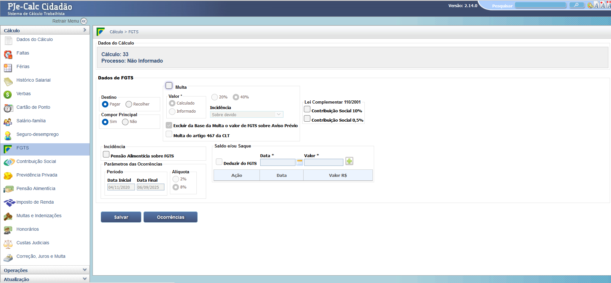
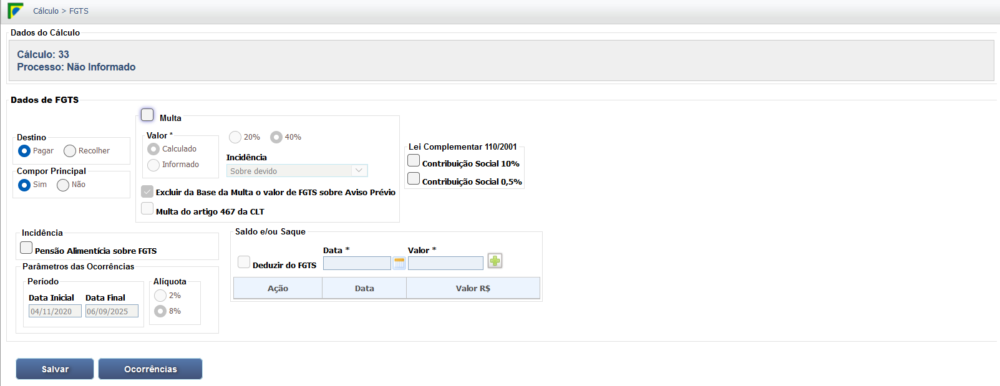
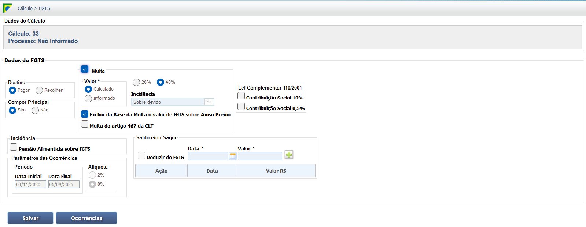
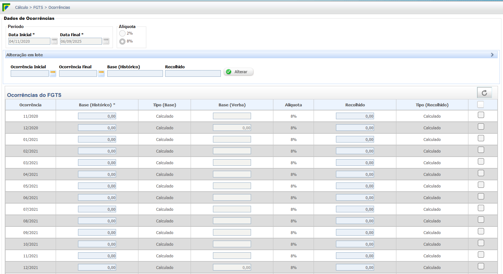

Saque e Multa de 40% do FGTS
Resgate dos Depósitos do FGTS em Casos de Rescisão
O direito ao saque do saldo dos depósitos de FGTS é determinado pela modalidade de extinção do contrato, conforme detalhado abaixo:
-
1. Saque Integral (100% dos Depósitos): Ocorre em caso de Dispensa Sem Justa Causa (pelo empregador) ou Rescisão Indireta. O trabalhador saca todo o saldo da conta vinculada, acrescido da multa de 40%.
-
2. Saque Parcial (80% dos Depósitos): Aplica-se na Rescisão por Comum Acordo (Art. 484-A CLT). O trabalhador tem direito a sacar 80% do saldo do FGTS, além de receber a multa reduzida de 20%.
-
3. Saque Parcial (50% dos Depósitos): Ocorre na Culpa Recíproca, reconhecida judicialmente. O trabalhador saca 50% do saldo do FGTS, além da multa de 20%.
Multa Rescisória (40% e 20%)
A multa rescisória do Fundo de Garantia por Tempo de Serviço (FGTS) é uma indenização devida pelo empregador. Ela incide sobre o montante total dos depósitos de FGTS realizados e varia conforme a modalidade da extinção contratual, o que impacta diretamente a liberação do saldo para o trabalhador.
Diferenciais: Percentual da Multa x Tipo de Rescisão
40% do FGTS (Rescisão Integral)
- 1. Dispensa Unilateral Sem Justa Causa:
- Ato exclusivo e imotivado do empregador.
- 2. Rescisão Indireta (Justa Causa do Empregador):
- Reconhecida judicialmente por falta grave do empregador.
20% do FGTS (Rescisão Reduzida)
- 1. Rescisão por Comum Acordo (Art. 484-A CLT):
- Acordo consensual entre empregado e empregador (Lei 13.467/17).
- 2. Culpa Recíproca:
- Quando ambas as partes cometem falta grave, reconhecida por decisão judicial.
Base Legal e Jurisprudência
Normas Legais Primárias
-
Lei nº 8.036/90 (Lei do FGTS) - Art. 18, §§ 1º e 2º: É o fundamento legal direto que estabelece a obrigação do empregador de pagar a indenização de 40% (quarenta por cento) sobre o montante de todos os depósitos de FGTS, corrigidos monetariamente, realizados na conta vinculada do trabalhador, em caso de dispensa sem justa causa.
-
CLT (Decreto-Lei nº 5.452/43) - Art. 484-A: Dispositivo adicionado pela Reforma Trabalhista (Lei nº 13.467/17) que permite a extinção do contrato de trabalho por comum acordo, estabelecendo que a multa do FGTS será de **20%** sobre o total depositado.
Principais Entendimentos Jurisprudenciais (TST)
-
Súmula nº 46 do TST: Confirma que a multa de 40% (quarenta por cento) é devida sobre o **total dos depósitos realizados**, durante a vigência do contrato de trabalho, devidamente corrigidos monetariamente, reafirmando que a base de cálculo é o acumulado histórico, não apenas o saldo atual.
-
Orientação Jurisprudencial (OJ) 349 da SDI-1 do TST: Estabelece que saques do FGTS, seja para adesão a Plano de Demissão Voluntária (PDV) ou para aquisição de moradia, **não alteram** a base de cálculo da multa rescisória de 40% devida em caso de posterior dispensa sem justa causa. O cálculo incide sobre o total depositado no período.
-
Súmula nº 304 do TST: (Embora não trate diretamente da base, o princípio do TST é que o valor devido é integral sobre o total corrigido, sendo fundamental para o entendimento consolidado da matéria.)
Base de Cálculo e Deduções
A multa rescisória (40% ou 20%) é aplicada sobre o montante total de depósitos devidamente corrigidos. É fundamental entender os componentes dessa base e as regras de dedução:
Cálculo e Composição da Base
- Total dos Depósitos: Soma de todos os valores recolhidos mensalmente pelo empregador (8% da remuneração) desde o início do contrato.
- Correções Monetárias: A base deve incluir as atualizações e juros aplicados pela Caixa Econômica Federal.
- Inclusão de Saques: A multa é calculada sobre todos os depósitos realizados no contrato, incluindo aqueles que o empregado possa ter sacado para fins específicos (como moradia ou aposentadoria), desde que devidamente corrigidos.
Regra de Não Dedução (Saques Anteriores)
Movimentações do Saldo:
Os saques realizados pelo empregado (ex: moradia própria, aposentadoria) **não diminuem a base de cálculo da multa**. A indenização continua incidindo sobre o total depositado e corrigido durante o contrato, mesmo que o saldo atual na conta do FGTS esteja zerado.
Verbas Reflexas
A incidência do FGTS e da sua respectiva multa de 40% (ou 20%) sobre outras parcelas salariais é um ponto crucial em cálculos judiciais, especialmente quando são deferidas verbas com natureza salarial em sentença.
Cadeia de Incidências
- FGTS sobre Verbas Deferidas: O **FGTS (8%)** deve incidir sobre toda verba salarial deferida em juízo que integre a remuneração (ex: horas extras, adicional noturno, periculosidade, etc.).
- Multa sobre o Novo FGTS: Consequentemente, a **multa rescisória (40% ou 20%)** deve incidir sobre o valor do FGTS calculado sobre essas novas verbas salariais (reflexo sobre reflexo).
- A Multa Não Gera Reflexo: A própria multa de 40% (ou 20%) possui natureza indenizatória e **não integra a base de cálculo** para FGTS, férias, 13º salário, aviso prévio ou qualquer outra verba.
Base Legal Adicional (Súmula 63 do TST):
A Súmula 63 do TST estabelece que a contribuição para o Fundo de Garantia por Tempo de Serviço (FGTS) é devida sobre a remuneração percebida no período do contrato de trabalho, o que fundamenta a incidência sobre as verbas salariais reconhecidas judicialmente.
Calculadora (Simulação)
Esta calculadora simula o valor da multa e o total que será liberado para saque com base no montante total dos depósitos de FGTS feitos durante o contrato e o tipo de rescisão. **Atenção:** os resultados representam o valor total bruto (base + multa).
Resultados do Cálculo:
Valor da Multa Rescisória (40% ou 20%):
R$ 0,00
Total Bruto (Depósitos + Multa):
R$ 0,00
O valor final a sacar é ajustado conforme a regra de saque do FGTS (100%, 80% ou 50% dos depósitos), somado ao valor total da multa.
Lançamento no PJe-Calc
No sistema PJe-Calc, a Multa de 40% (ou 20%) do FGTS é geralmente calculada a partir dos dados do contrato de trabalho e dos valores de depósitos informados, ou de forma manual, quando os dados da CTPS ou dos extratos são insuficientes.
Passos Comuns para o Cálculo Judicial
- 1. Tela de Dados do FGTS (Passo Inicial): Acesse a aba "FGTS" no menu lateral. É possível visualizar a área de cálculo com o destino ("Pagar" ou "Recolher"), a opção "Multa" e os percentuais (20% ou 40%) e o período de incidência. 
- 2. Configuração de Multa e Incidência: Marque a opção "Multa" e selecione o percentual (20% ou 40%) e o tipo de incidência ("Sobre devido" é o mais comum, mas há outras opções). A opção de deduzir o FGTS do saldo/saque também está presente. 
- 3. Detalhe da Configuração (Período): A tela mostra a configuração da Multa em 20% com incidência "Sobre devido" para o período de 04/11/2020 a 06/09/2025. 
- 4. Lançamento dos Valores (Ocorrências): Na aba "Ocorrências", o usuário insere os valores de Base (Histórico) e Recolhido para cada competência, permitindo o cálculo do valor devido. 
- 5. Juros e Correção Monetária: O PJe-Calc aplica a correção monetária e os juros de mora (a partir do ajuizamento da ação) sobre o valor da multa, conforme os índices judiciais aplicáveis ao Título Executivo Judicial (sentença).
Atenção Judicial:
Em cálculos de **Rescisão Indireta**, o percentual de 40% deve ser lançado sobre a base corrigida. Em caso de **Culpa Recíproca** ou **Comum Acordo**, o percentual deve ser de 20%, conforme o entendimento legal.